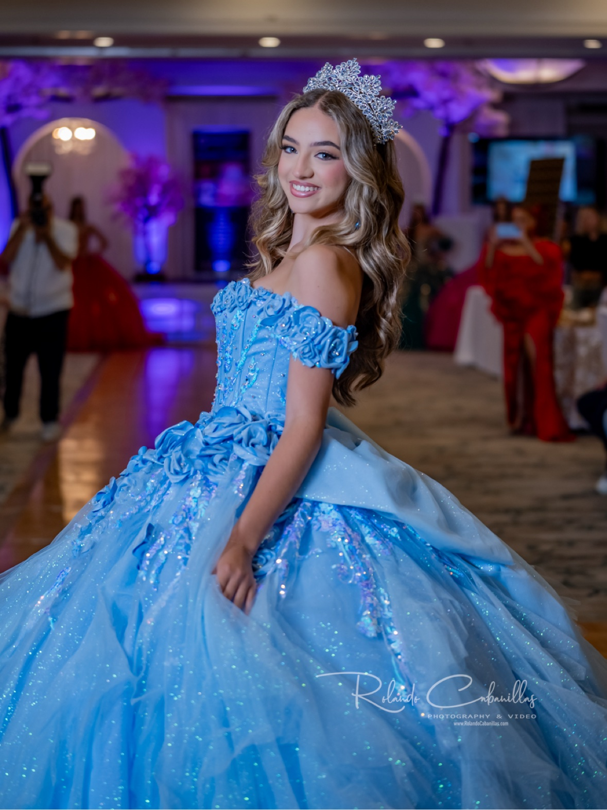

Photo / Video Creator
“Let me capture those special moments for you!”
Freelance photographer and videographer from South Florida — serving clients in town and traveling wherever the story takes me, doing what I love to do.

Quinceañera · Rolando Cabanillas Photography & VideoRolando “Rolly” Cabanillas — Photographer & Videographer
Photography started as a hobby — albeit an expensive one — but I quickly became hooked. Over the past 15 years, I’ve dedicated myself to learning and perfecting techniques to freeze emotions and stories in every frame.
What began as a personal journey has evolved into my profession. But for me, photography isn’t just a way to make a living — it’s about creating joy. Seeing the excitement and smiles from my clients when they see their photos makes every session worthwhile.
I’m originally from Peru and have been living in South Florida since 2000. My professional background is in systems engineering, but I found my passion in photography — a world that lets us capture life’s most meaningful moments and relive them every time we revisit an image.
I specialize in capturing authentic moments, whether it’s for a special event or a personal portrait session. With a blend of creativity and attention to detail, I strive to make every photograph reflect your unique story.
— Rolando Cabanillas
From the end of a runway to the first dance — photo and video coverage built around your moment, your story, your style.
Runway coverage for designers, models and producers — full walks, detail shots and backstage moments, plus vertical reels ready to post.
Book coverageThe dress, the crown, the waltz, the party — complete photo and video coverage of her once-in-a-lifetime celebration, from portraits to the last dance.
Reserve your datePortfolio sessions that get models booked — editorial looks, digitals and comp-card-ready images shot in studio and on location around Miami.
Start your portfolioHonest, emotional wedding photography and film — the glances, the tears and the celebration, captured as it truly happened.
Check your datePersonal portrait sessions with direction that puts you at ease — beauty, editorial and lifestyle portraits that reflect who you are.
Book a sessionMilestones, birthdays and family sessions — patient, joyful photography of the moments that pass by fastest.
Plan your sessionThe short list — fifty-nine photographs: the strongest frames from the runway, the quinceañeras, the weddings and the parties. Filter by gallery, tap any photo to view it full-screen — and if you want everything, the complete collection of 204 lives in the archive right below.
Every photograph in the collection — all 204: complete wedding stories, quinceañeras, fashion-week showcases, portrait sessions, and events & parties across Miami. Nothing held back.
Pageant runway coverage, filmed live — the titleholders of Miss Mundo Internacional and Miss Teen Global, captured as they walked.
Runway coverage — Miss Mundo Internacional
Runway coverage — Miss Teen Global
Fifteen years in the making, one night to remember. I cover the full celebration — the portraits in the gown, the court, the waltz and the party — in photos and video she’ll treasure for the rest of her life.
Lyah shares her experience after her session.
Filmed on camera in the dressing room right after her session, Lyah answers the photographer’s question about how her session went — in her own words. The video closes with her hero photo from the shoot.
Press play and listen with sound on.
Lyah — model session testimonial
Tell me about your event or session — I reply personally, usually the same day. Dates for fashion shows, quinceañeras and weddings book out early, so reach out as soon as you have yours.
Four portfolios, four sides of the lens — pick the one that matches what you need, and say hello.